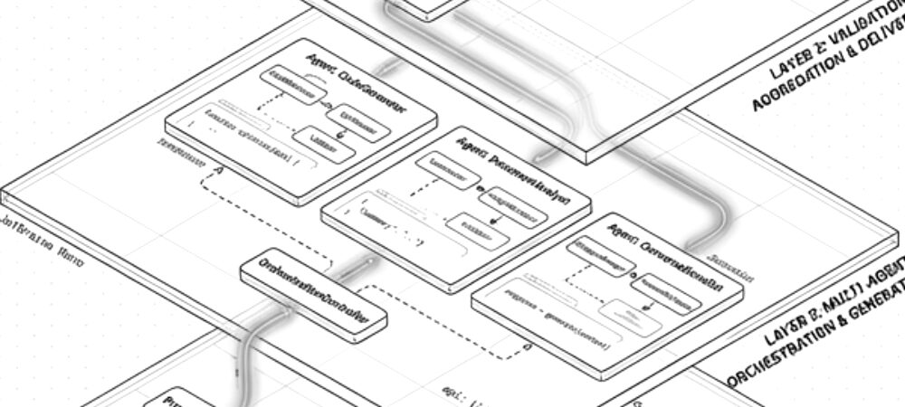
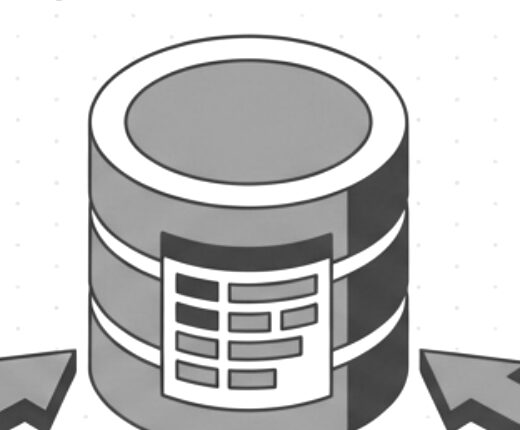
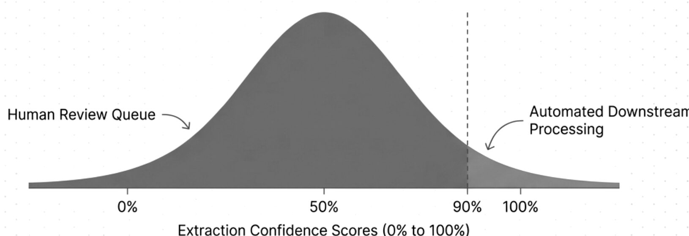
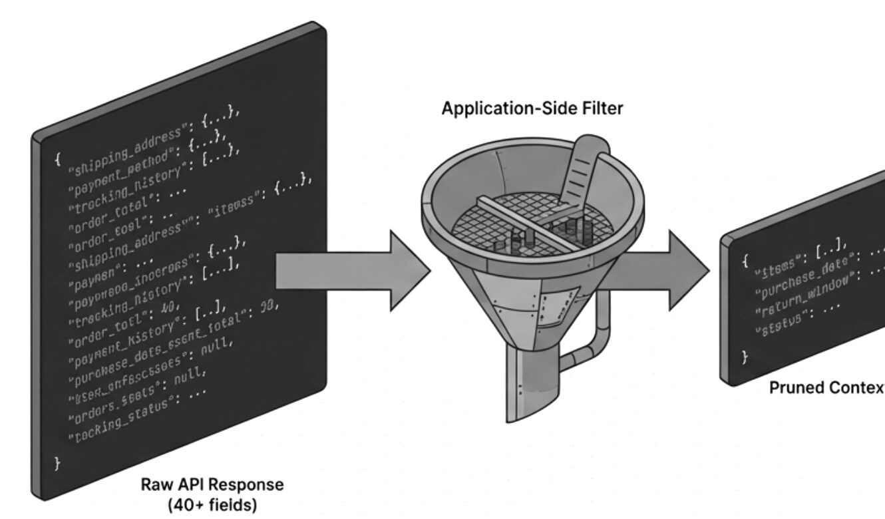
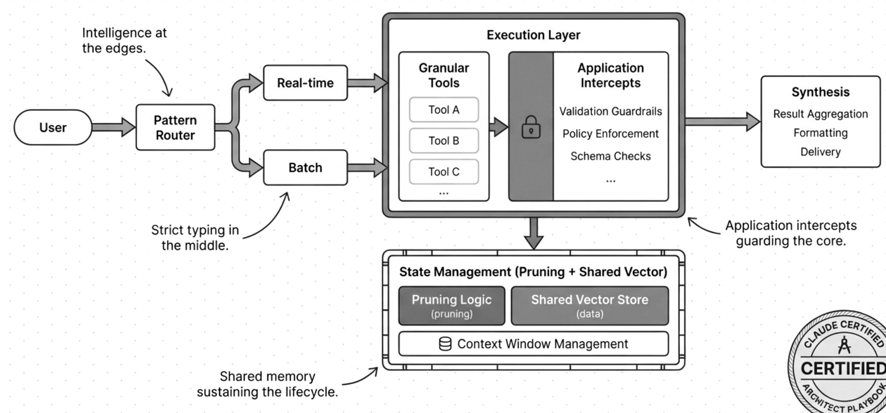
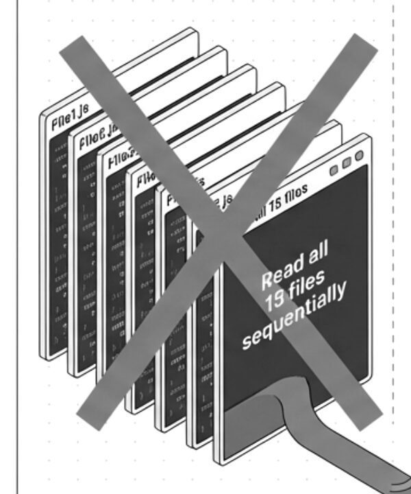

A gamified study plan that takes you from your first API call to the Claude Certified Architect exam. You pay once, ₦20,000 or $15, and keep it for good.
First, AI Foundations: what AI is, then your first Claude API call.
Then Developer Skills: tools, MCP, Claude Code, RAG and agents.
Then the Architect Exam Sprint, one domain at a time, ending in mock exams.
After it, Production AI and LLMOps.
Last, Portfolio and Career: two projects and a showcase.

The plan spends its time where the marks are. Each domain gets its own week in the exam sprint and its own share of the practice exam.
| Weight | Domain | Mock questions |
|---|---|---|
| 27% | Agentic Architecture | 8 in the mock |
| 20% | Prompt Engineering | 6 in the mock |
| 19% | Tool Integration | 6 in the mock |
| 19% | Claude Code | 6 in the mock |
| 15% | Context Management | 4 in the mock |
What stop_reason indicates Claude wants to use a tool?
C, tool_use. When Claude returns stop_reason: 'tool_use', it means the model wants to call one or more tools. Your code should execute the tools and return results.
Pick an answer on the left. It is marked here the way the app marks it, with the explanation from the question bank.
Correct
Real questions from the plan’s domain quizzes, one per domain.
A sample record, as your profile shows it.
Ten levels climb to AI Master at 12,000 XP. A 7‑day streak multiplies your XP by 1.5, a 30‑day streak by 2.
For learners paying in dollars, anywhere outside Nigeria.
All 26 weeks and 200+ resources, 17 quizzes, the practice exam, the 27-page Architect’s Playbook, and progress that syncs across your devices. No subscription.
$15once
Get startedFor learners in Nigeria, paid in naira.
The same plan, the same Playbook, the same lifetime access. The page picks your currency from where you are, and you can switch it.
₦20,000once
Get startedIs this an Anthropic course? No. It is an independent study plan built around the Claude Certified Architect exam. It links to Anthropic’s own Skilljar courses and docs where they are the best source.
Does the price include the exam? No. You register for the exam with Anthropic. The ₦20,000 or $15 pays for the plan, its quizzes and the Playbook.
Is it a subscription? No. You pay once and keep access for life, including weeks you have not reached yet.
Do I need to code already? Week 1 starts with what AI is. You make your first Claude API call in week 2, and Python for Everybody sits in week 1 as a bonus if you need it.
Is the practice exam the real exam? No. It is 30 questions from the plan’s own bank, weighted like the real domains, 45 minutes, 72% to pass, and different each attempt.
Are the linked courses free? The plan links out to Anthropic, Coursera, Hugging Face, DeepLearning.AI and others. Those sites set their own terms.
Can I go faster or slower? Yes. Weeks are a pace, not a lock. Your streak counts the days you study.
What happens if I change phones? Your progress, XP and badges are saved to your account and sync across devices.
What is the shop? Extra courses and PDFs, sold one by one. You do not need any of them to finish the plan.
Why two prices? ₦20,000 is the price in naira for Nigeria; $15 is the price everywhere else.
Twenty-six weeks to a 720, for ₦20,000 or $15, paid once.
Get started